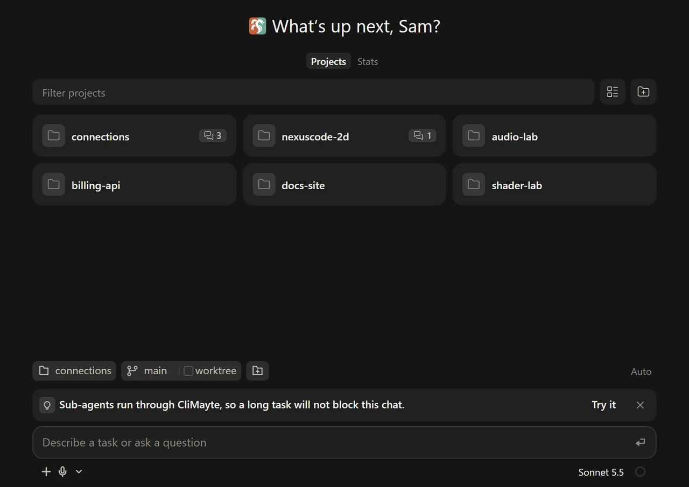
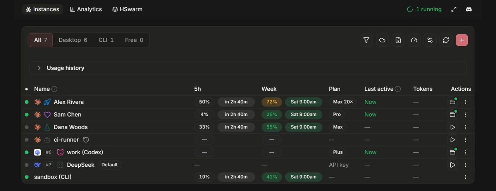
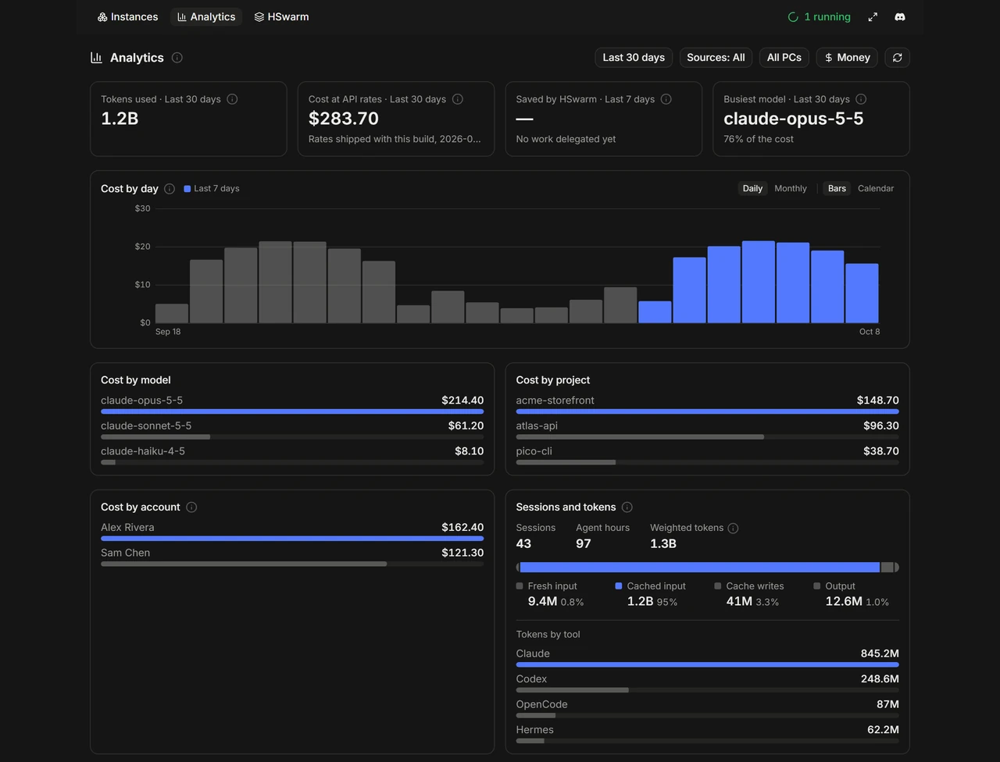

It reads what your tools already wrote
Install and open
One download. AgentHydra opens its own window, with no console and no browser tab.
It finds what is there
Claude Code, Claude Desktop and CLI chats, Codex and OpenCode sessions, every signed-in account. Nothing to import.
Work from one place
Reply, start a chat in any project, or hand the pieces to your other accounts.
Every tool’s history, one honest line
All three in one sidebar. You can reply to Claude; Codex and OpenCode are read-only.
| What you can do | Claude | Codex | OpenCode |
|---|---|---|---|
| Read and follow live | Yes | Yes | Yes |
| Search alongside everything else | Yes | Yes | Yes |
| Reply in the chat | Yes | No | No |
| Move a chat to another account | Yes | No | No |
| Accounts with their quota | Desktop + CLI | Desktop + CLI | Not applicable |
| Open, download or copy the raw file | Yes | Yes | Rendered from its database |
Scroll the table sideways for Codex and OpenCode.
What is in the window
New starts from your projects
A grid of your projects, each with its git state and how many chats are open in it, the busiest first. A chat started in a parent folder is filed under the project it worked in.

Every account in one table
Each Claude and Codex account with its plan, 5-hour and weekly quota and when it resets. Open, quit, create and rename them.

Where the time and money went
Cost by day, model, project and account, and what wasted it: unused MCP servers, oversized contexts, commands that kept failing.

Dev servers, built in
Start, stop and watch your projects’ local servers, with logs, errors, CPU and memory. Open one beside the chat.
CliMayte
Hand a task’s pieces to your other Claude CLI accounts. A worker moves on when its account runs out.
Move a chat, history and all
Out of quota on one account? Move the chat to another and carry on.
Background tasks in view
Every running command, workflow and worker in one panel, each with Stop.
Two PCs, one sidebar
With Login sync, your other PC’s chats are listed too.
Nothing runs headless
Every run is a chat you can see and steer.
Built for you and your agents
You get a window
Chats, projects, dev servers and accounts, in one native window.
Your agents get MCP
The same state over MCP. AgentHydra registers itself with Claude Code, so a new session has its tools.
search_sessions
tail_session
fan_out
archive_desktop_chat
climayte_status
climayte_send
launch_instance
quit_instance
check_my_usage
usage_budget
{
"mcpServers": {
"agenthydra": {
"type": "http",
"url": "http://127.0.0.1:7787/api/mcp"
}
}
}Agents that know when to stop
An agent can read an account's remaining quota before a heavy fan-out, and route work to whichever account has the most left.
Pace the fan-out, don't crash into the wall
The weekly cap is the one that binds, so an agent shrinks the job before it gets there.
Install
v2.0.2 · all releases
Or from source with Bun. Everything stays on loopback.
Nothing else by hand: it fetches Bun on first run, and Claude Code when a chat first needs it.
Claude Code or Claude Desktop for the Claude side. Codex and OpenCode are optional.
Built and used on Windows; the macOS and Linux builds are unverified. Managing Claude Desktop accounts needs its classic installer, not MSIX.
Local by default, with one exception: a periodic update check sends the app version, a coarse OS tag and a random install id. Never an IP, hostname, path, account or email. AGENTHYDRA_NO_PING=1 opts out. MIT.
What people weigh AgentHydra against
Separate terminal windows
One terminal each, alt-tabbed, history scattered. One sidebar is the whole point.
Claude Desktop on its own
One account’s chats. AgentHydra shows every account’s, the CLI’s and the other tools’, side by side.
Conductor, Claude Squad
They start new sessions in fresh git worktrees. AgentHydra works with the ones you already have.
Stop alt-tabbing to remember what is running
One window. Every chat, every project, every account, and an MCP door for your agents.
Download for WindowsQuestions people actually ask
Is AgentHydra free?
Yes. AgentHydra is free and open source under the MIT license, and no account is needed to run it. There is no cloud service behind it and nothing to sign up for: it reads the Claude, Codex and OpenCode files already on your machine and shows them in its own window.
What AI coding tools does AgentHydra support?
Claude Code, including the chats Claude Desktop runs and plain CLI sessions, plus Codex and OpenCode. Claude chats can be replied to, moved between accounts and started from AgentHydra itself; Codex and OpenCode sessions are listed and readable.
Can I reply to a Codex or OpenCode session from AgentHydra?
No, only Claude chats take a reply. Codex and OpenCode conversations open read-only, without a reply box, rather than with a send button that quietly does nothing.
Is AgentHydra private, or does it send my data anywhere?
It reads local files and talks to localhost. On its own it only checks for updates, through a LunarWerx relay of GitHub’s release feed, sending the app version, a coarse OS tag and a random install id; the server derives a coarse location and network from the request and never stores the IP. Set AGENTHYDRA_NO_PING=1 to send the check straight to GitHub with none of that.
What can my AI agents do through AgentHydra’s MCP server?
The same things you can: list, search and read sessions, move chats between accounts, hand work to CliMayte, start and stop dev servers, manage Claude and Codex accounts, and check which account they run on and how much quota it has left before fanning out work. AgentHydra registers itself with Claude Code on every start.
Does AgentHydra work offline?
Yes, for reading: listing, searching and reading sessions needs no network, since it only reads files already on your machine. Claude itself still needs whatever connectivity it requires, and the update check is online-only and can be turned off.
How is AgentHydra different from Conductor or Claude Squad?
Those tools start new Claude Code sessions in fresh git worktrees so several tasks run in parallel. AgentHydra works with the chats and accounts you already have, across Claude Code, Claude Desktop, Codex and OpenCode, and adds projects, dev servers, analytics, account management and MCP on top.
Do I need Bun installed to use AgentHydra?
No. Bun is only needed to run it from source. The Windows download fetches the Bun it was built with on first run, checked against Bun’s published checksums, and fetches Claude Code when a chat first needs it.